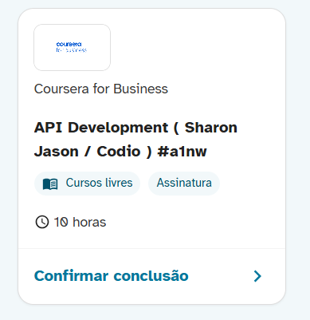
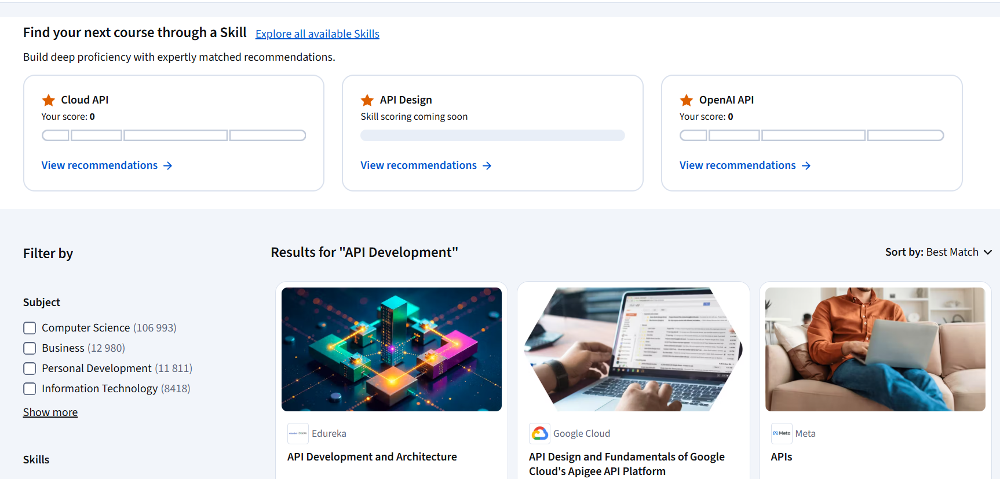
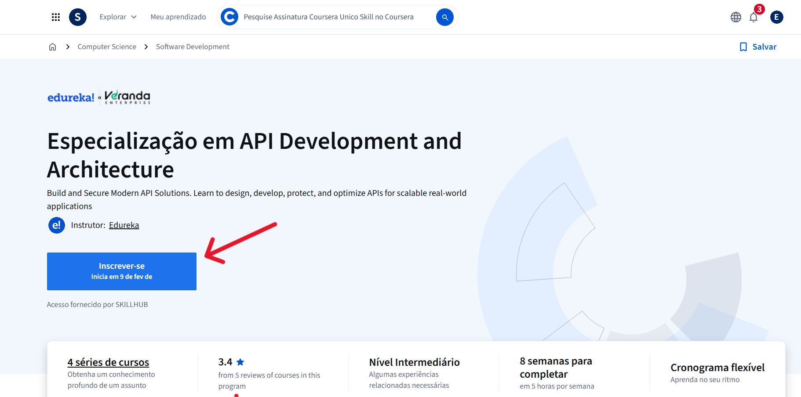
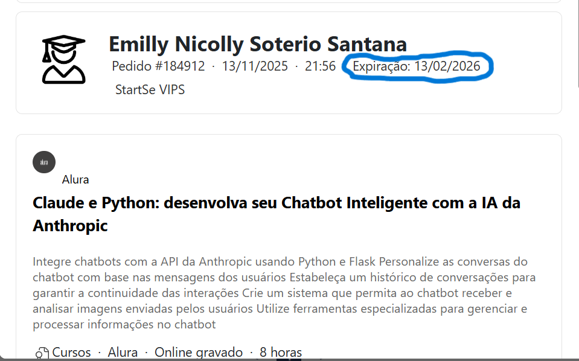

Orientações sobre acesso, cancelamento e liberação de categoria
Os cursos por assinatura funcionam de forma diferente dos cursos individuais. Ao solicitar um curso por assinatura, o colaborador passa a ter acesso a diversos cursos relacionados ao tema da assinatura.
Por esse motivo, o curso solicitado com um nome específico pode não aparecer exatamente com o mesmo título na plataforma. Em vez disso, serão exibidos outros cursos relacionados à mesma área de conhecimento.
Isso não significa erro no acesso. O colaborador está corretamente matriculado na assinatura e pode realizar os cursos disponíveis dentro do tema.
Exemplo: O nome do curso é API Development:

Na plataforma da instituição, o colaborador encontra os cursos com nomes diferentes, mas relacionados ao mesmo tema:

Por se tratar de um curso por assinatura, a plataforma não permite anexar o certificado diretamente. Essa é uma limitação técnica já mapeada.
Para que a categoria seja liberada e o colaborador possa realizar novos cursos, será necessário realizar o cancelamento do pedido.
O cancelamento não invalida o certificado. A empresa já está ciente de que, em cursos por assinatura, esse procedimento é necessário para novas inscrições.
Após o cancelamento, a categoria ficará liberada para que o colaborador possa solicitar novos cursos normalmente.
O time responsável já está atuando para que essa limitação técnica seja resolvida o mais breve possível.
Caso o colaborador entre em contato informando que solicitou um curso específico, mas encontrou na plataforma apenas cursos com outros nomes, é necessário analisar os conteúdos disponíveis.
Se os cursos apresentados tiverem relação direta com o tema da assinatura, oriente o colaborador a ficar despreocupado, pois em cursos por assinatura nem sempre o nome exato aparece e está tudo certo com o acesso..
Atenção:
Caso os cursos liberados não tenham relação com o tema contratado, abra um chamado. A instituição pode ter liberado o acesso incorretamente.
Algumas instituições, como a Alura, exibem pré-requisitos para determinados cursos.
Caso o colaborador questione esse ponto, informe que os pré-requisitos existem para facilitar a compreensão do conteúdo e garantir um melhor aprendizado.
Não possuir os pré-requisitos não impede a realização do curso. Eles são apenas uma recomendação importante para o aproveitamento.
É comum que, ao acessar a plataforma do parceiro, o curso não apareça de imediato ou nenhum curso esteja listado.
Oriente o colaborador a utilizar a barra de pesquisa da plataforma, inserir o nome do curso e verificar o que aparece.
Em plataformas como a Coursera e Alura, normalmente o colaborador pesquisa o curso, clica na opção desejada e solicita a inscrição, que é liberada automaticamente.

Se eles questionarem sobre isso, podem informar que é normal e o processo está correto, para acessar o contéudo é preciso ativar a inscrição naquele curso, mas que isso não é prejudicial e que não precisa pagar nada por isso. Ele precisa clicar em se inscrever para ter acesso ao conteúdo.
Além disso, no primeiro acesso é comum existirem termos de aceite que precisam ser confirmados, para dar segmento no curso. Caso o colaborador não aceite os termos, o curso pode não aparecer.
Os cursos de assinatura não há ordem para começar e terminar um curso, você pode iniciar 3 ou mais cursos ao mesmo tempo, e não há necessidade de terminar um para começar outro.
Para identificar rapidamente se um curso é por assinatura, verifique na plataforma ADMIN:
Todo card que possui data de expiração corresponde a um curso por assinatura. Além disso, todos os cursos por assinatura são cursos livres.

Caso o colaborador tenha concluído o curso e queira realizar outros cursos livres, a categoria é liberada automaticamente, sem necessidade de aguardar algum prazo.
Macros que podem ser utilizadas no atendimento
Em alguns atendimentos, o colaborador pode entrar em contato com receio de ser prejudicado ao cancelar a matrícula, por entender que a empresa acompanha resultados de acordo com o status final que fica na plataforma Skill.
Nesses casos, tranquilize o colaborador e utilize a macro abaixo:
Por se tratar de um curso por assinatura, a plataforma não permite anexar o certificado diretamente.
Para liberar a categoria, será necessário realizar o cancelamento do pedido, tudo bem?
Mas não se preocupe, o cancelamento não afetará o seu certificado, e sua empresa já está ciente de que, em casos de cursos por assinatura, o cancelamento é necessário para prosseguir com novas inscrições.
O time responsável está atuando para que essa limitação técnica seja resolvida o mais breve possível, tudo bem?
Dúvidas sobre como concluir o curso por assinatura
Quando o colaborador não entende como realizar a conclusão do curso ou questiona o motivo de não conseguir anexar o certificado, utilize a macro abaixo:
XX, você não consegue anexar o certificado, pois é um curso de assinatura.
Os cursos de assinatura funcionam assim: você realiza o pedido e recebe o acesso à plataforma durante um período específico e, devido a uma limitação técnica em nossa plataforma, o anexo de certificados para cursos por assinatura não está disponível no momento.
Para podermos registrar a conclusão deste tipo de curso, solicitamos o cancelamento da sua inscrição. Reforço que essa medida é apenas um procedimento interno temporário e não gerará nenhuma penalidade da empresa para você.
Em relação ao certificado, pode ficar despreocupado, pois ele não será invalidado ou retirado de você.